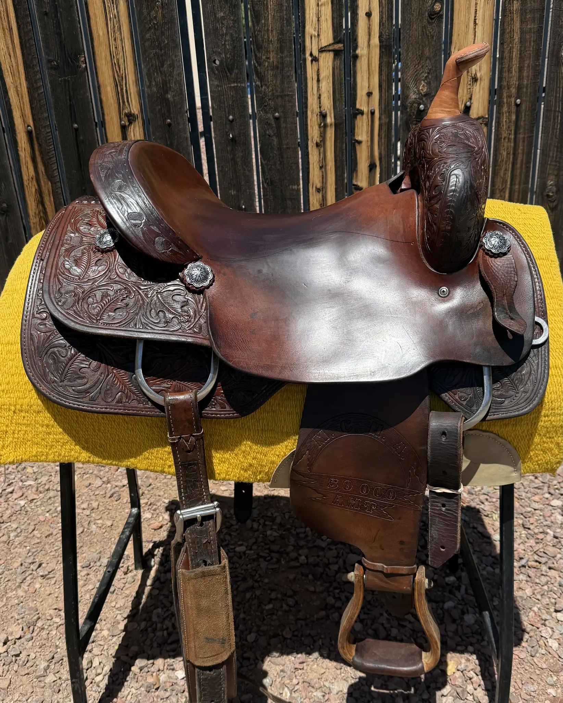
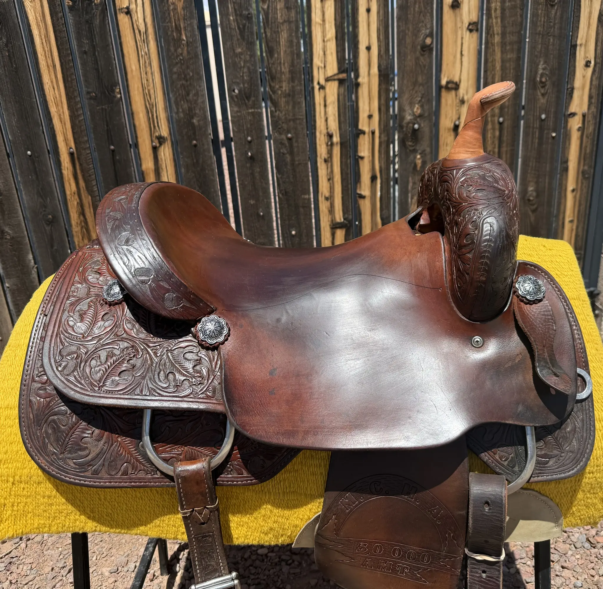
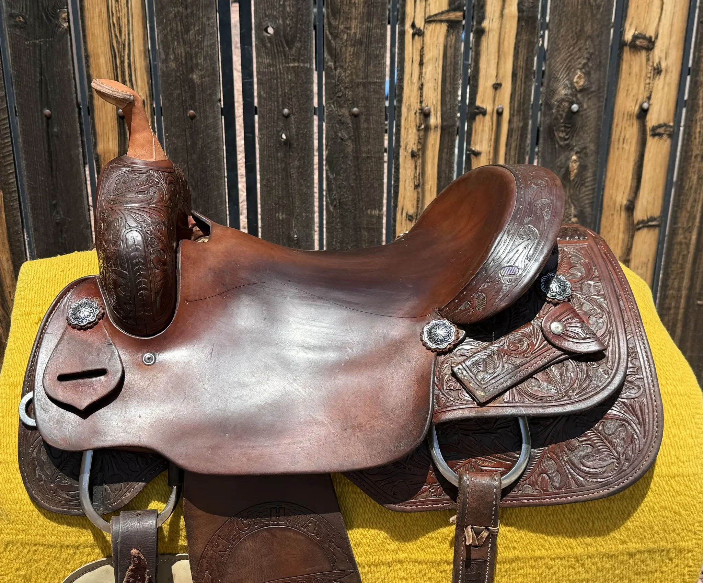
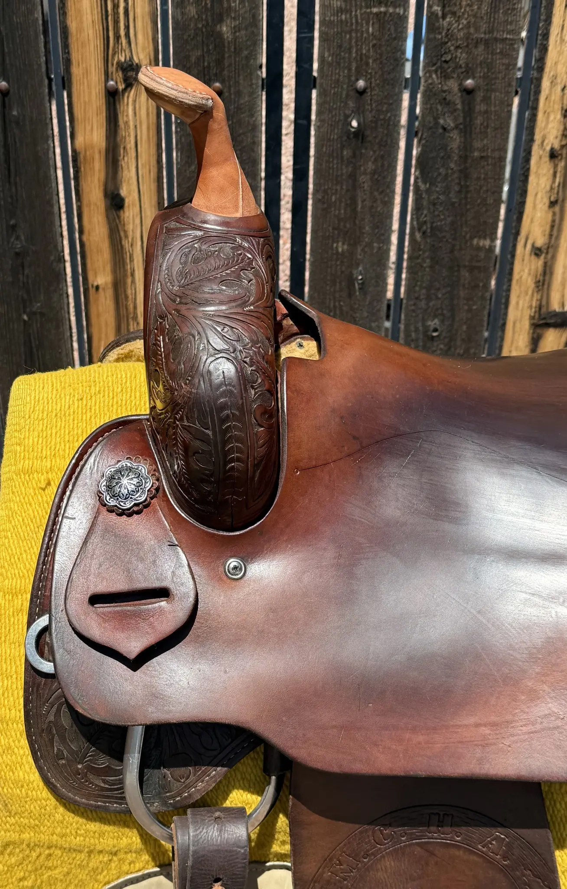
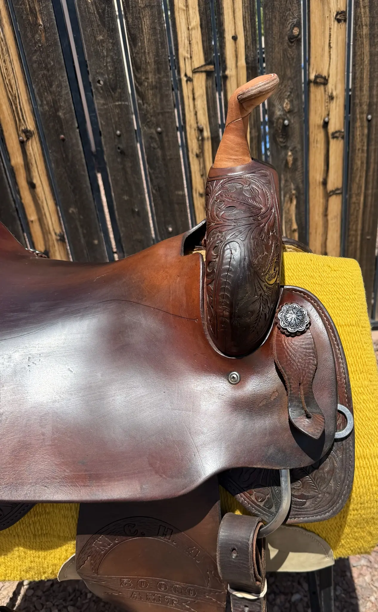
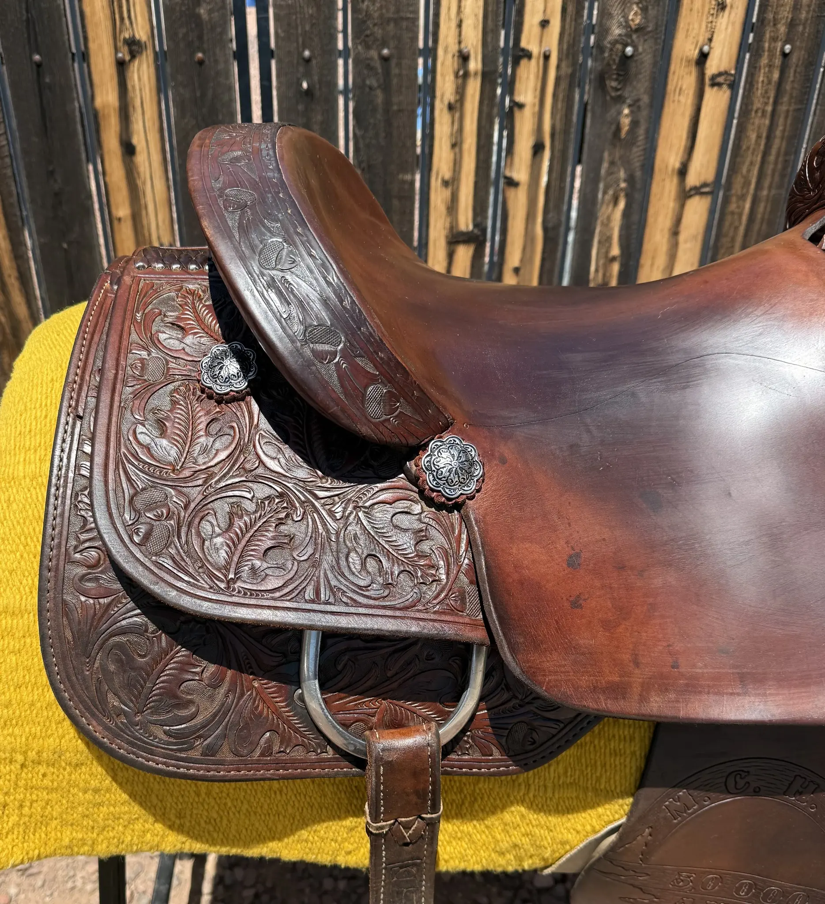
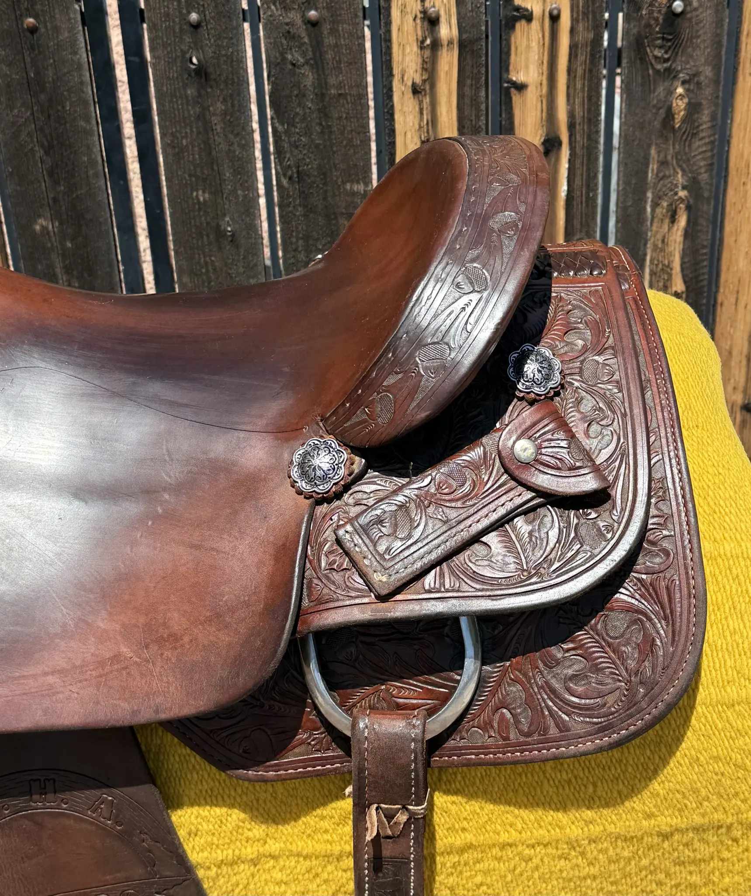
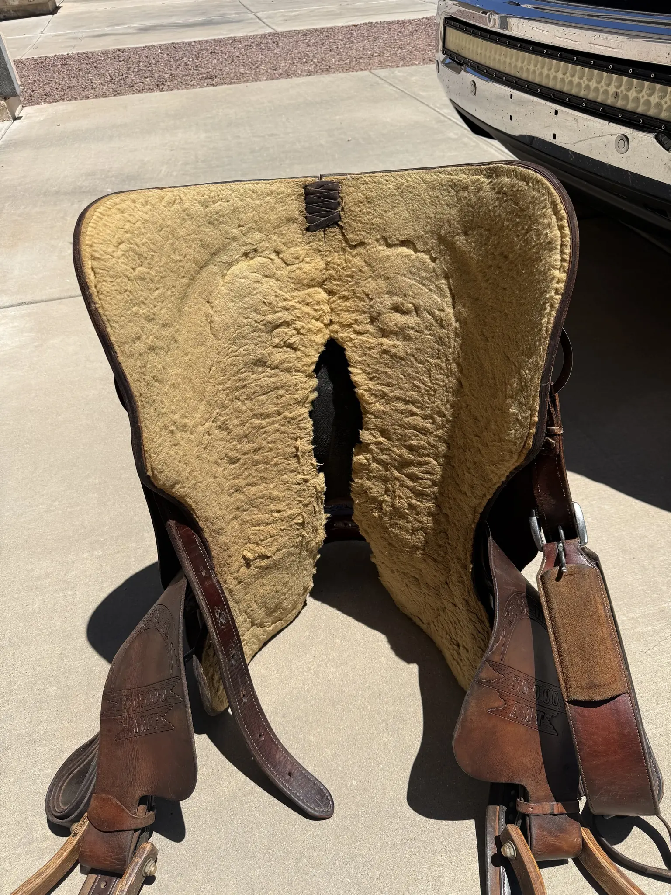
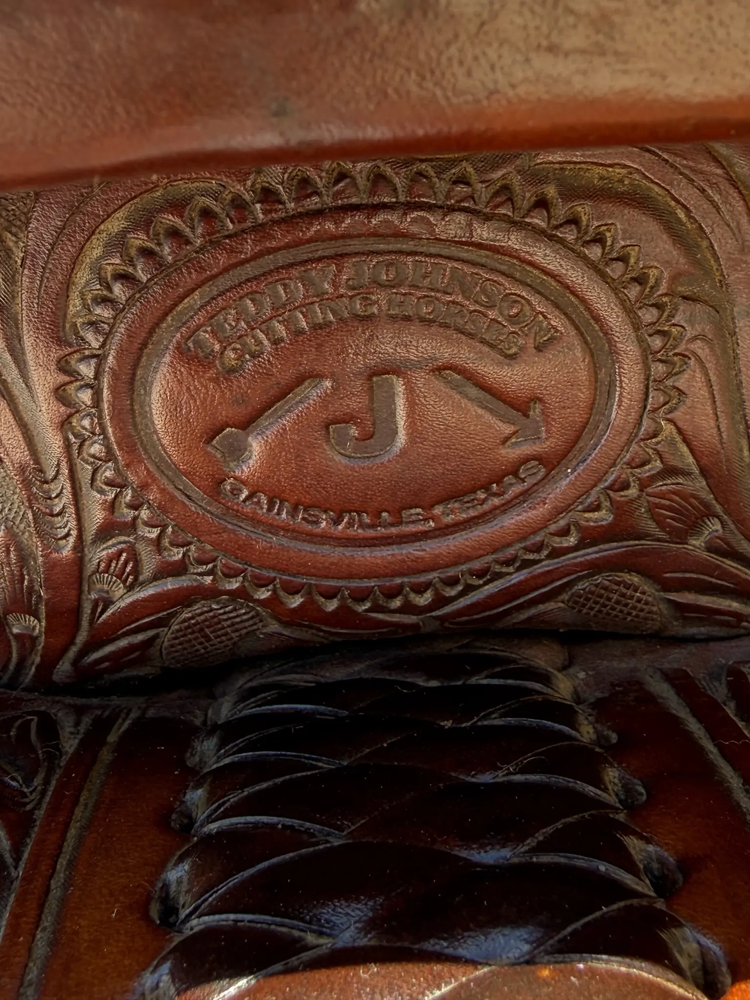

| Maker | Teddy Johnson — Gainesville, TX |
|---|---|
| Seat Size | 16" |
| Tree Width | Contact for fit details |
| Tooling | Full floral throughout |
| Hardware | Silver conchos |
| Underside | Woolskin lining intact |
| History | NCHA $30,000 AMT competition |
| Condition | Pre-owned — Good |
This Teddy Johnson Cutter carries real NCHA competition history — it was shown in the $30,000 Amateur division, which means it has been through serious work under a real competitor. The full floral tooling across fenders, skirts, and jockeys is clean and well-defined. Silver conchos are intact. The woolskin underside shows the even wear pattern of a saddle that was fitted and used correctly.
At 16 inches, this sits in the middle of the cutting saddle size range — accessible to a broad range of adult riders. Teddy Johnson saddles carry genuine name value in the NCHA community. At $1,195 this is a working-competitor price for a known maker's certified saddle with documented competition history. Contact David to discuss tree width fit for your horse.